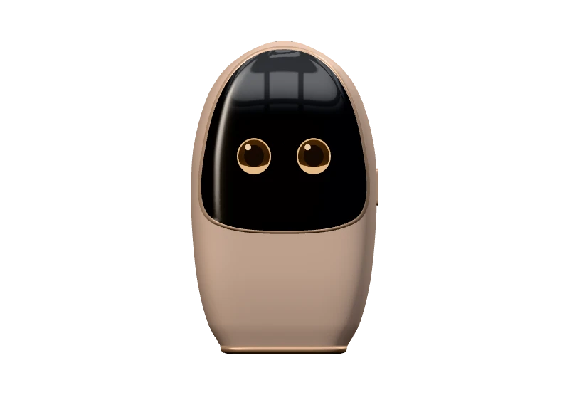
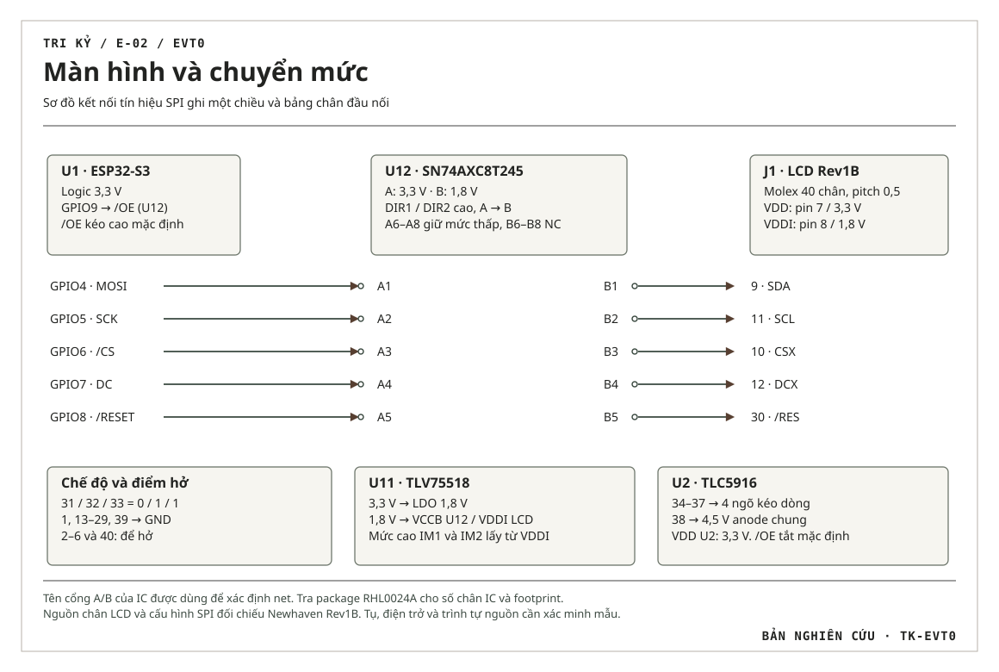
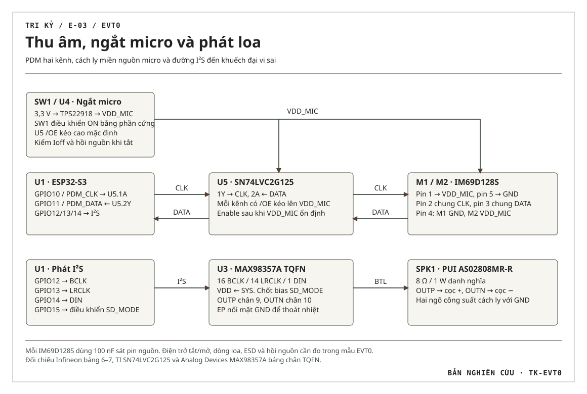

Mẫu thiết kế TK‑EVT0
Tri Kỷ
Thiết bị đồng hành bằng giọng nói tiếng Việt, với ánh mắt chuyển động theo nhịp trò chuyện.
Xem bản vẽ
Kéo để xoay · Cuộn để phóng
Lắp kínTách hết
Các cụm linh kiện
Bản vẽ kỹ thuật
Cấu trúc vỏ, các phân hệ điện tử và kết nối màn hình của mẫu nghiên cứu.

Sơ đồ nguyên lý phân hệ E‑01

Màn hình và chuyển mức E‑02

Thu âm, ngắt micro và phát loa E‑03
Mô hình số và sơ đồ EVT0 dùng để duyệt thiết kế. Dung sai cơ khí, hồ sơ PCB và nghiệm thu mẫu thật đang mở.